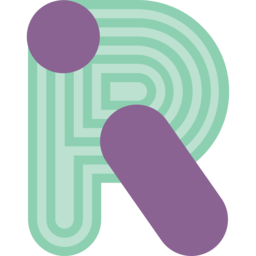

Hace algo mas de un mes, estoy utilizando Matrix Synapse, juntamente con el cliente Riot, a través de mi servidor-raspberry de forma totalmente privada y teniendo la totalidad de la gestión del servicio como los usuarios registrados. De momento, no he federado mi servidor, de manera que únicamente podremos comunicarnos los usuarios registrados en este servidor.
Voy a explicaros paso a paso, como crear vuestro servidor en raspbian y si abrís los puertos del servicio, podréis comunicaros dentro y fuera de vuestra red local, con una de las aplicaciones de comunicación de Software Libre, mas seguras que existen en la actualidad, ya que posee de doble cifrado de datos.
Características:
sudo apt-get install build-essential python2.7-dev libffi-dev \
python-pip python-setuptools sqlite3 \
libssl-dev python-virtualenv libjpeg-dev
sudo pip install --upgrade pip
sudo pip install --upgrade ndg-httpsclient
sudo pip install --upgrade virtualenv
Este segunda comando ten paciencia, se crearan los certificados, etc … y tardará mucho tiempo, probablemente una hora, recomiendo detener servicios
virtualenv -p python2.7 ~/.synapse
source ~/.synapse/bin/activate
pip install --upgrade pip
pip install --upgrade setuptools
pip install https://github.com/matrix-org/synapse/tarball/master
Instala también el modulo para synapse.app.
pip install (--upgrade) synapseclient
Recuerda sustituir el nombre del servidor my.domain.name En –report-stats= tienes que seleccionar yes o no.
cd ~/.synapse
python2.7 -B -m synapse.app.homeserver \
--server-name=my.domain.name \
--config-path=homeserver.yaml \
--generate-config \
--report-stats=[yes|no]
cd ~/.synapse
source ./bin/activate ; synctl start
La Terminal nos devolverá que por el puerto 8008, encontraremos una inferfaz de gestión. Esta es antigua, no te recomiendo que la uses, te recomiendo crear ususarios mediante el comando que veremos mas adelante. Detener el servicio, si lo deseamos:
source ./bin/activate ; synctl stop
CREAR USUARIOS
Iniciamos el servidor y situándonos dentro del directorio .synapse
cd ~/.synapse
Ejecutaremos el siguiente comando:
register_new_matrix_user -c homeserver.yaml https://localhost:8448
Ahora nos preguntará por el usuario, contraseña y si este usuario es administrador o no.

ENCONTRARSE LOS USUARIOS
“Los que saben el enlace de la sala, incluso huespedes”
3 )Ahora en Avanzado, compartimos al otro usuario La identificación interna de esta Sala
Publicado por Angel el domingo 20 enero del 2019
También te puede interesar:
Powered by org-bash-blog
Writing in orgmode whith emacs

Este obra está bajo una licencia de Creative Commons Reconocimiento-NoComercial-CompartirIgual 4.0 Internacional.